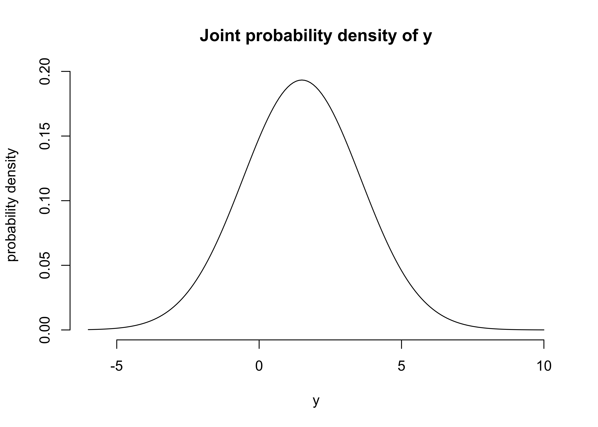

29 Chapter 1 Exercises
2021-08-19
knitr::opts_chunk$set(echo = TRUE, comment = "#>", dpi = 300)Complete questions 1-4 and 6-8.
29.1 Question 1
When \(\theta = 1\), then \(y = N(\mu = 1, \sigma)\) and when \(\theta = 2\), then \(y = N(\mu=2, \sigma)\). \(\Pr(\theta=1)= \Pr(\theta=2) = 0.5\).
a) If \(\sigma=2\) what is the marginal probability density for \(y\)?
\[ \begin{aligned} &= \Sigma_{\theta=1}^{\Theta} \Pr(\theta) N(y | \mu_\theta, \sigma) \\ &= \frac{1}{2} N(y|1,2) + \frac{1}{2} N(y|2,2) \end{aligned} \]
y <- seq(-6, 10, 0.1)
d <- 0.5 * dnorm(y, 1, 2) + 0.5 * dnorm(y, 2, 2)
plot(
y, d,
type = "l",
frame = FALSE,
xlab = "y",
ylab = "probability density",
main = "Joint probability density of y"
)
b) What is \(\Pr(\theta=1 | y=1)\) with \(\sigma=2\).
Solve using Baye’s rule:
\[ \begin{aligned} \Pr(\theta | y) &= \frac{\Pr(\theta) \Pr(y | \theta)}{\Pr(y)} \\ \Pr(\theta=1 | y=1) &= \frac{\Pr(\theta=1) \Pr(y=1 | \theta=1)}{\Pr(y=1)} \\ \end{aligned} \]
where
\[ \Pr(\theta = 1) = 0.5 \\ \Pr(y=1 | \theta=1) = N(y=1|1,2) \\ \Pr(y=1) = \frac{1}{2} N(y=1|1,2) + \frac{1}{2} N(y=1|2,2) \]
thus
\[ \begin{aligned} \Pr(\theta=1 | y=1) &= \frac{\Pr(\theta=1) \Pr(y=1 | \theta=1)}{\Pr(y=1)} \\ &= \frac{\frac{1}{2} N(y=1|1,2)}{\frac{1}{2} N(y=1|1,2) + \frac{1}{2} N(y=1|2,2)} \\ \end{aligned} \]
(0.5 * dnorm(1, 1, 2)) / (0.5 * dnorm(1, 1, 2) + 0.5 * dnorm(1, 2, 2))#> [1] 0.5312094c) Describe the posterior density of \(\theta\) as \(\sigma\) increases or decreases.
As \(\sigma \to \infty\), the probabilities \(\Pr(y|\theta)\) and \(\Pr(y)\) become increasingly wide, resulting in the prior probability \(\Pr(\theta)\) consuming the equation resulting in \(\Pr(\theta=1|y=1) = \frac{1}{2}\). This situation would be analogous to having no data.
As \(\sigma \to 0\), the opposite occurs and the prior is overwhelmed by the probability \(\Pr(y=1|\theta=1)\). Thus \(\Pr(\theta=1|y=1) = 1\); complete certainty in the value of \(\theta\). This situation would be analogous to collecting a lot of highly homogeneous data.
29.2 Question 2
Conditional means and variances: show that equations 1.8 and 1.9 hold if \(u\) is a vector.
Equation 1.8: \(\text{E}(u) = \text{E}(\text{E}(u|v))\)
For a vector \(u\), Equation 1.8 would be computed componentwise: \(\text{E}(u_i) = \text{E}(\text{E}(u_i|v))\).
Equation 1.9: \(\text{var}(u) = \text{E}(\text{var}(u|v)) + \text{var}(\text{E}(u|v))\)
For a vecotr \(u\), the diagnoals for Euqation 1.9 would be computed componentwise: \(\text{var}(u_i) = \text{E}(\text{var}(u_i|v)) + \text{var}(\text{E}(u_i|v))\). For off-diagonals, the result is the covariance between the indeices of \(u\): \(\text{cov}(u_i, u_j)\).
29.3 Question 6
Approximately 1/125 of all births are fraternal twins and 1/300 are identical twins. Elvis had a twin brother. What is the probability that Elivs was an identical twin?
\[ \Pr(\text{identical twin} | \text{twin and brother}) = \frac{\Pr(\text{identical twin}) \Pr(\text{twin and brother} | \text{identical twin})}{\Pr(\text{twin and brother})} \\ \]
\[ \begin{aligned} \Pr(\text{identical twin}) = \frac{1}{300} \\ \Pr(\text{twin and brother} | \text{identical twin}) = 1 \\ \Pr(\text{twin and brother}) &= \Pr(\text{identical twin}) \Pr(\text{boy} | \text{identical twin}) + \Pr(\text{fraternal twin}) \Pr(\text{boy} | \text{fraternal twin}) \\ &=\frac{1}{300} \times 1 + \frac{1}{125} \times \frac{1}{2} \end{aligned} \] \[ \begin{aligned} \Pr(\text{identical twin} | \text{twin and brother}) &= \frac{\frac{1}{300} \times 1}{\frac{1}{300} \times 1 + \frac{1}{125} \times \frac{1}{2}} \\ &= \frac{\frac{1}{300}}{\frac{11}{1500}} \\ &= \frac{5}{11} \end{aligned} \]
29.4 Question 8
Subjective probability: discuss the following statement. ‘The probability of event \(E\) is considered “subjective” if two rational persons \(A\) and \(B\) can assign unequal probabilities to \(E\), \(P_A(E)\) and \(P_B(E)\). These probabilities can also be interpreted as “conditional”: \(P_A(E)\) = \(P(E|I_A)\) and \(P_B(E) = P(E|I_B)\), where \(I_A\) and \(I_B\) represent the knowledge available to persons \(A\) and \(B\), respectively.’ Apply this idea to the following examples.
(a) The probability that a ‘6’ appears when a fair die is rolled, where \(A\) observes the outcome of the die roll and \(B\) does not.
In this case, the statement “the probability of event \(E\) is considered”subjective” if two rational persons \(A\) and \(B\) can assign unequal probabilities to \(E\)” does not hold because \(A\) knows the value of the die whereas \(B\) must guess at random. Thus the probability of the event is not subjective, the two people have different amounts of data.
(b) The probability that Brazil wins the next World Cup, where \(A\) is ignorant of soccer and \(B\) is a knowledgeable sports fan.
As the event has yet to occur, the probability of the event is subjective and \(B\) has a stronger prior belief than does \(A\).
sessionInfo()#> R version 4.1.2 (2021-11-01)
#> Platform: x86_64-apple-darwin17.0 (64-bit)
#> Running under: macOS Big Sur 10.16
#>
#> Matrix products: default
#> BLAS: /Library/Frameworks/R.framework/Versions/4.1/Resources/lib/libRblas.0.dylib
#> LAPACK: /Library/Frameworks/R.framework/Versions/4.1/Resources/lib/libRlapack.dylib
#>
#> locale:
#> [1] en_US.UTF-8/en_US.UTF-8/en_US.UTF-8/C/en_US.UTF-8/en_US.UTF-8
#>
#> attached base packages:
#> [1] stats graphics grDevices datasets utils methods base
#>
#> loaded via a namespace (and not attached):
#> [1] bookdown_0.24 clisymbols_1.2.0 digest_0.6.27 R6_2.5.0
#> [5] jsonlite_1.7.2 magrittr_2.0.1 evaluate_0.14 highr_0.9
#> [9] stringi_1.7.3 rlang_0.4.11 renv_0.14.0 jquerylib_0.1.4
#> [13] bslib_0.2.5.1 rmarkdown_2.10 tools_4.1.2 stringr_1.4.0
#> [17] glue_1.4.2 xfun_0.25 yaml_2.2.1 compiler_4.1.2
#> [21] htmltools_0.5.1.1 knitr_1.33 sass_0.4.0